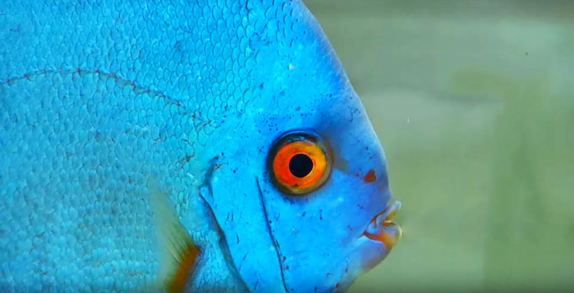
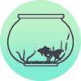
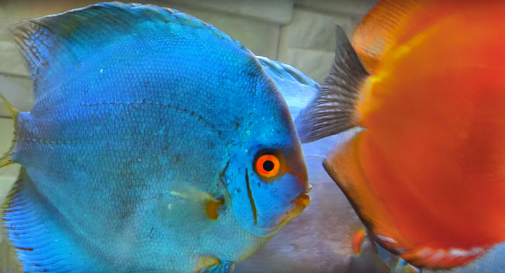

Blue Diamond Discus
A GUIDE TO CARING & BREEDING FOR BLUE DIAMOND DISCUS (SYMPHYSODON SP.)
The Blue Diamond Discus is a species of Discus popular because of its vibrant iridescent blue color. The brilliant blue from this strain is the result of wild caught specimens selectively bred based on favourable mutations in their color. The result is a solid blue species of Discus. The Blue Diamond discus are unique with thin oval shaped bodies and long decorated fins. The overall color of the Blue Discus will depend on the strain, mood and health of the fish. Dark, patchy, hiding or skittish fish should be avoided as they are the most likely to carry disease, worms or be experiencing a high level of stress.

The discus has become one of the more prominent species in the aquarium and the Blue Diamond Discus is one of the most popular strains purchased by hobbyists. The approximate size in purchasing the Blue Discus is from 2 ½” to 3”. Smaller purchasing sizes of the Blue Diamond discus should be avoided as they are far more susceptible to stress, disease and growth complications.

Temperature ~78-86°F
pH ~ 6.3 - 7.2 | Hardness 1.5-3.5 KH
Origin | Malaysia (selective strain)
Maximum Size | 8.5"

Recommended Tank Size | 50 Gallons +
Diet | Carnivorous (Primarily Meaty Foods)

Care Difficulty | More Difficult
Compatibility | Generally peaceful community fish

Nitrite 0ppm

Ammonia 0ppm

Nitrate >20ppm

Water Changes >50% Fortnight
In the wild the Blue Diamond Discus stretch from the Amazon to the Rio Negro Regions in South America. The Blue Diamond Discus is not a beginner fish. It needs sophisticated care including stable water conditions and low ammonia/nitrates. The Diamond Discus will become noticeably more protective during spawning and thus require a large aquarium where they can have their own space. Blue Discus are peaceful and will form families, especially with direct siblings. Blue Diamond Discus are best purchased in schools of the same size. Adding them to the aquarium at the same time will avoid conflict and allow them to develop their own territories.

Breeding Blue Diamond Discus
- Breeding the Blue Diamond Discus is difficult and not recommended for first time breeders. Discus need their own tanks to reproduce and require constant demanding care to ensure smooth delivery of the fry. It is essential to breed a proven pair. Alternatively, keeping a group of at least 6 juvenile Blue Discus will allow for pairing to naturally form.
- The pair will need to be moved to a separate, bare-bottom, rearing tank before spawning. This is essential as it is allows the control of variables and is much easier to keep the aquarium clean. Warm, soft and slightly acidic water is needed for spawning, constant water changes (with similar temperature freshwater) can simulate rainfall and speed up the spawning process.
- Before spawning, the pair will clean a flat surface (a breeding cone is a good pick). After spawning, the parents should not be removed from the fry because the fry will feed on the mucus of their parents. However, after the fry begin to accept infusoria and live brine shrimp the parents should be removed. This will reduce stress on the parents and improve the fry’s chance of survival.

Blue Diamond Discus Diet
- The Blue Diamond Discus are primarily carnivorous and should be fed frozen or dried bloodworms and tubifex, granular pellets (there are specific brands for Blue Diamond discus that enhance coloration), high-quality flake food and frozen meaty food (brine shrimp, beef heart etc.).